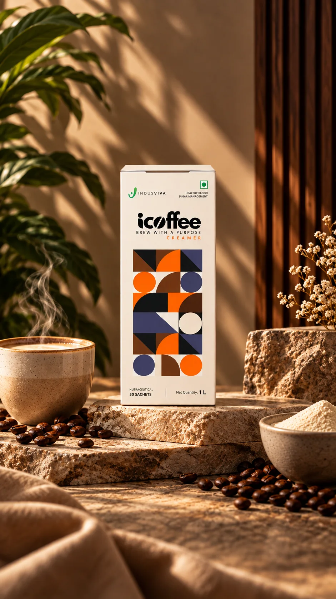
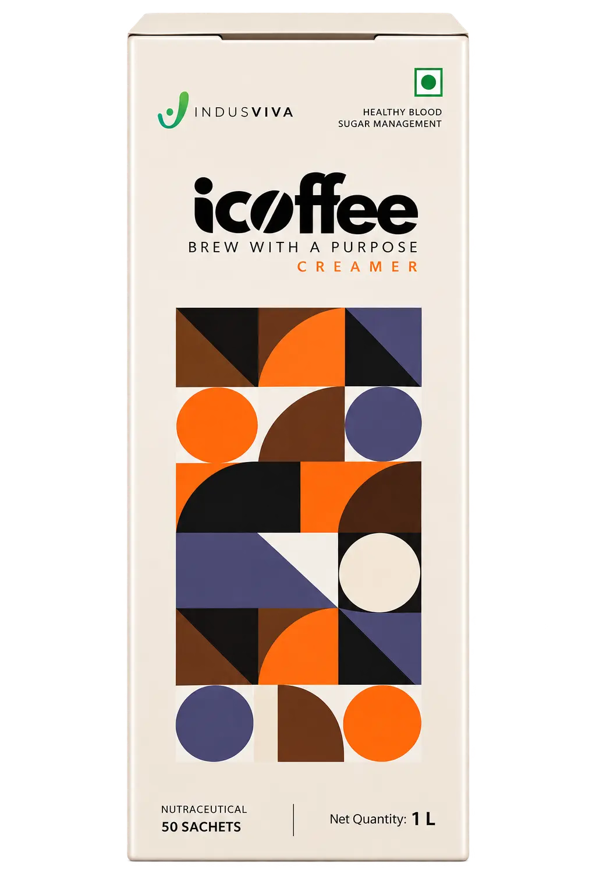
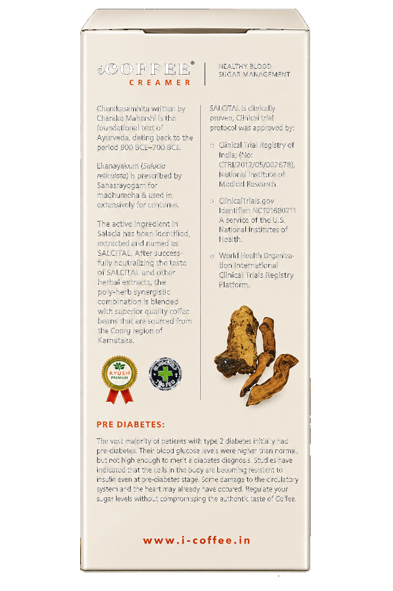
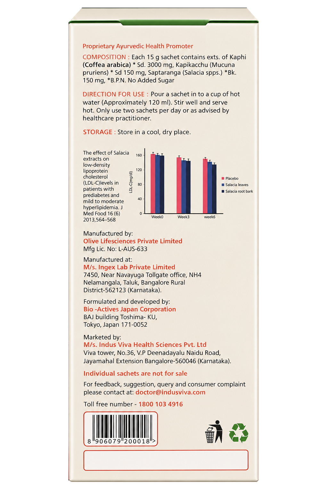

Gentle metabolic wellness
A milder concentration of Salcital, suited to everyday and preventive metabolic wellness.
The information on this website or anywhere linked by this is not intended or implied to be a substitute for professional medical advice, diagnosis, or treatment. All content, including text, graphics, images, and information, contained on or available through this document is for general information purposes only.
Any Person and/or Any Organization makes no representation and assumes no responsibility for the accuracy of information contained on or available through this website or anywhere linked by this, and such information is subject to change without notice. You are encouraged to confirm any information obtained from or through this website or anywhere linked by this with other sources, and review all information regarding any medical condition or treatment with your physician.
Never disregard professional medical advice or delay seeking medical treatment because of something you have read on or accessed through this website or anywhere linked by this.
Any Person and/or Any Organization does not recommend, endorse, or make any representation about the efficacy, appropriateness, or suitability of any specific tests, products, procedures, treatments, services, opinions, health care providers, or other information that may be contained on or available through this very website or anywhere linked by this.
Any Person and/or Any Organization is not responsible nor liable for any advice, course of treatment, diagnosis, or any other information, services, or products that you obtain through this very website or anywhere linked by this.
A 100% natural, non-dairy coffee creamer blend with Salacia reticulata (Saptaranga) and Mucuna pruriens (Kapikacchu) — a milder, milkier everyday cup with no added sugar.

iCoffee Creamer blends the same premium, decaffeinated Coorg coffee with Salcital (from Salacia reticulata) and Mucuna pruriens extract, plus a non-dairy creamer for a smooth, milky texture. It carries a gentler concentration of active botanicals, making it a comfortable everyday choice with no added sugar.
| Serving size | 15 g per sachet |
|---|---|
| Pack size | 50 sachets per box |
| Coffee | Decaffeinated Coorg Coffea arabica |
| Active extract | 11% Salcital |
| Texture | Non-dairy creamer · no added sugar |
A milder concentration of Salcital, suited to everyday and preventive metabolic wellness.
Non-dairy creamer gives every cup a comforting, indulgent texture — with no added sugar.
May increase feelings of fullness, supporting healthy appetite regulation and metabolic balance.
Supports a healthier HDL–LDL balance as part of an overall heart-conscious routine.
iCoffee Creamer's formula draws on three ingredients that continue to be studied for their role in everyday wellness. Here's a closer look at the independent research behind each one.
Researchers regularly study Mucuna pruriens for its effectiveness in supporting several health metabolic conditions. Its seed extract has been shown to inhibit the enzymes α-glucosidase and α-amylase, slowing carbohydrate digestion and supporting balanced energy levels after meals.
A trusted Ayurvedic root and bark, Salacia is studied for its ability to support carbohydrate metabolism and slow the pace of digestion. Research also points to improved lipid balance, reduced cholesterol, and better overall metabolic support.
Coffee beans naturally contain compounds such as polyphenols and chlorogenic acids that have been studied for their role in supporting metabolic balance and healthy carbohydrate digestion.
iCoffee Creamer carries the gentler of the two Salcital concentrations in the iCoffee range (11%), which is why it is generally positioned for those seeking everyday metabolic wellness support.
If you are looking for a stronger botanical wellness formulation, iCoffee Black's higher-strength formulation may be more appropriate.
Coffee, yoga and mindful wellness form an interesting combination — understanding how they work together can help you build a routine designed to support healthier living, day after day.
A regular yoga practice may support the body's natural metabolic balance.
Yoga helps ease cortisol, a stress hormone that can otherwise disrupt metabolic balance.
Forward bends, twists and breathwork support healthy circulation and digestion, aiding blood sugar regulation.
Movement, mindful breathing and a purposeful cup of iCoffee come together as one consistent, everyday ritual.
Empty one 15 g sachet of iCoffee Creamer into your cup.
Add 100–120 ml of hot water and stir well until fully dissolved.
Enjoy twice daily, ideally half an hour before meals, as part of your daily ritual.
50 sachets of smooth, purposeful coffee — formulated with Ayurvedic botanicals for gentle, everyday metabolic wellness.
SHOP icoffee CREAMER →


iCoffee comes in two formulations — a gentler Creamer and a stronger Black. The right choice depends on where you are in your wellness journey.
11% Salcital · 15 g sachet · Non-dairy, milky cup
Best for everyday metabolic wellness and a gentler botanical blend.
22% Salcital · 10 g sachet · Bold, black coffee
Best for those seeking stronger botanical support.
View iCoffee Black →No.
iCoffee Creamer is a wellness beverage with purposeful Ayurvedic botanicals. If you are on prescribed medication or managing any health condition, please consult your healthcare provider before adding it to your routine.
and can be taken alongside prescribed medication and diet. Please consult your healthcare provider before adding any new supplement to your routine.
Special precautions apply during pregnancy, particularly with a complicated pregnancy history. iCoffee should not be considered a treatment during pregnancy. Please speak with your physician before use.
iCoffee has a low salt and electrolyte composition, but anyone managing blood pressure should still consult their healthcare provider before adding it to an existing medication routine.
Results vary by individual and depend on diet, lifestyle and starting health status. Many users incorporate iCoffee Creamer as part of a consistent daily ritual and track changes alongside their regular health check-ups. iCoffee is not a treatment, and outcomes should be assessed with your healthcare provider.
The two products share the same core botanicals at different concentrations. Taking both simultaneously is not recommended. Choose the formulation suited to your current health profile and consult your healthcare provider if you are unsure which is right for you.
iCoffee Creamer is formulated for adult use. It has not been evaluated for use in children. Please consult a paediatrician before giving any supplement product to a child.
The research referenced on this page is for general educational purposes and is not a substitute for professional medical advice. See our Medical Disclaimer for more.